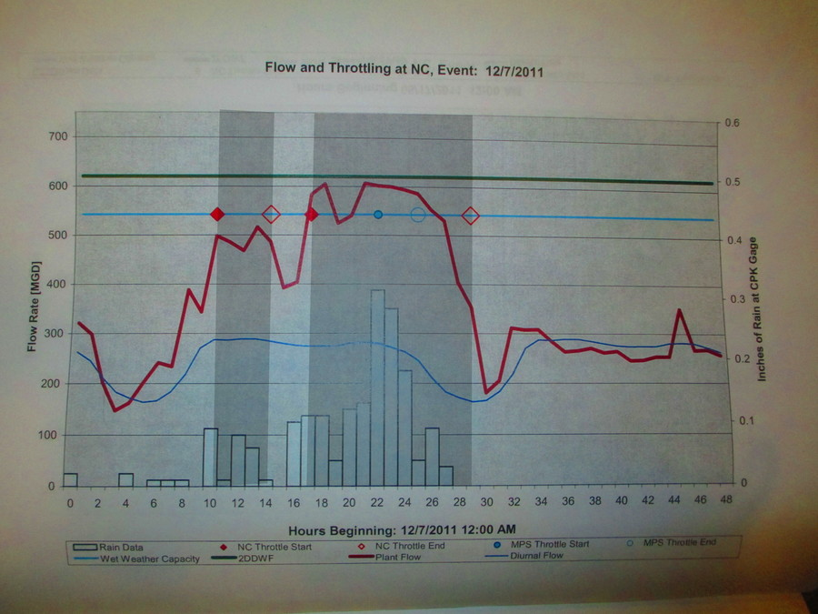

Overflows-ecohack3
Using recent rainfall figures to predict Newtown Creek sewer overflows
Goal
We want to predict whether a sewer will overflow soon based on current rainfall data in order to make DontFlush.me's alerts more relevant.
Data sources
Overflow statistic
We received a book from a FOIA request. This book contains graphs of, among other things, sewer overflow incidents in New York City during the top 10 storms of 2011 for each of the 14 sewage treatment plants.
Dates of the top ten storms, in the order they are presented in the book
- 8/14/2011
- 8/27/2011
- 9/6/2011
- 3/6/2011
- 4/16/2011
- 11/22/2011
- 10/29/2011
- 9/23/2011
- 5/17/2011
- 12/7/2011
For each of these 10 storms, the graphs present a 48-hour or 60-hour window of data around the storm. For 60-hour widows, we only used the first 48-hours. This results in a total of 7720 observation-hours, with one observation per hour.

Rainfall statistic
We collected rainfall statistics from Weather Underground. We chose this because of the [practical applications blah blah]
Methods
Data collection
We focused on the Newtown Creek sewershed. We have 480 observation-hours (10 storms at 14 plants) in the book. We measured overflow as hours between an NC throttle start (solid diamond) and an NC throttle end (empty diamond), inclusive. For example, the two darkened bands on this plot, from hours t1 to t2, indicate overflow periods.

The MPS throttle start (solid circle) and end (empty circle) apparently indicates overflows coming from the Manhattan pump station, which gets sent through the Newtown Creek station. We ignored these overflows.
For each of these hours, we also acquired the most recent observation from Weather Underground. This resulted in a table that looked like this.
Date Hour After 9 am Overflowing? Last rainfall figure
---- ---- ---------- ------------ --------------------
No Yes
To account for the diurnal flow, we added an "after 9 am" variable, which was "no" for midnight to 9 am and "yes" for 10 am on.
Date Hour After 9 am Overflowing? Last rainfall figure
---- ---- ---------- ------------ --------------------
No Yes
Model
We used the following model (in R formula syntax).
overflowing ~ Last rainfall figure + after 9 am
We also made some plot
blah blah
Figure out
- that weird spike of falses
- 100 records lost in the join
- what family of distribution should the rainfall follow theoretically
Add the pictures. Verify the paper API data by connecting frank's, tom's and casey's.
Conclusions
2 mm is a decent cut-off for the guess (http://chainsaw.thomaslevine.com/threshold.png)
{kind=link}
something about whether after 9 am matters
Remaining tasks
Get throttling events: Input throttling data from Paper APIGet precipitation events: Convert Weather data from JSON to CSVBuild algorithm to correlate throttling events with precipitation events- Refactor alert system to leverage algorithm from step 3
- Visualize alert data (TBD)
Contributors
- Leif: gathering weather data and data entry (http://github.com/lpercifield)
- Tom: understanding the stats and data entry (http://github.com/tlevine)
- Carl: visualization of weather data (http://github.com/c4rl)
- Casey: data entry and calculations (http://github.com/caseytwebb)
- Mike: data visualzation and structure in tableau (http://github.com/acceleratormt)
- Frank: Excel expert